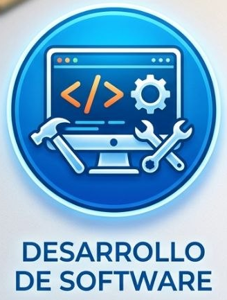
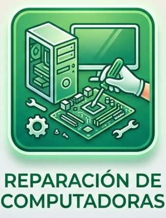
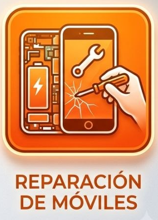

Nuestra misión es proporcionar servicios de alta calidad en el área de desarrollo de software y reparación de equipos electrónicos, buscando siempre la satisfacción del cliente y la excelencia en nuestros servicios.
Convertirnos en la empresa líder en soluciones tecnológicas, innovando constantemente y ofreciendo productos y servicios que respondan a las necesidades del mercado.

Creación de aplicaciones personalizadas y soluciones tecnológicas según sus necesidades.

Servicio técnico especializado para computadoras, notebooks y periféricos.

Reparación y mantenimiento de dispositivos móviles y tablets.